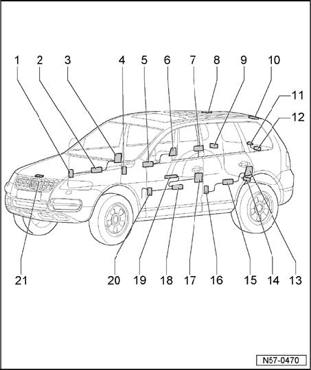

Locks: Locations
Central Locking System And Comfort System - Assembly Overview

1 - Coupling station
- Connectors T21a, T5e, T4t
- Location: Lower A-pillar, covered by footwell trim.
- Remove lower right A-pillar trim
2 - Door control module, FR
- Integrated in window regulator motor.
- Removing:
- Remove door trim
- Remove front subframe.
- Remove window regulator motor.
3 - Door lock, RF
- Door lock is secured to subframe.
- Electrical central locking system is integrated in door lock module.
- Removing:
- Remove door trim
- Remove door lock
4 - Coupling station
- Connectors T21c, T5i, T4ac
- Location: B-pillar
- Remove B-pillar trim.
5 - Door control module, RR
- Integrated in window regulator motor.
- Removing:
- Remove door trim
- Remove rear subframe
- Remove window regulator motor.
6 - Door lock, RR
- Door lock is secured to subframe.
- Electrical central locking system is integrated in door lock module.
- Removing:
- Remove door trim
- Remove door lock
7 - Central control module for comfort system
- Mounted on right rear wheelhouse.
- To remove, luggage compartment trim up to wheelhousing must be removed.
8 - Coupling station
- Location: in area of rear roof crossmember, covered by roof trim.
- Remove roof trim.
9 - Motor for fuel tank lid release
- Location: under C-pillar trim.
- Removing:
- To remove, luggage compartment trim up to wheelhousing must be removed.
- Remove motor for fuel tank lid unlock
10 - Coupling station
- Location: in area of rear roof crossmember, covered by roof trim.
- Remove roof trim.
11 - Rear window opening button
- Mounted together with rear wiper assembly.
12 - Rear window unlock unit
- Installed onto tailgate.
- Removing:
- Remove tailgate trim
- Remove rear window unlock unit
13 - Door lock, LR
- Door lock is secured to subframe.
- Electrical central locking system is integrated in door lock module.
- Removing:
- Remove door trim
- Remove door lock
14 - Tailgate positioning motor
- Installed onto tailgate.
- Removing:
- Remove tailgate trim
- Remove positioning motor
15 - Door control module, RL
- Integrated in window regulator motor.
- Removing:
- Remove door trim
- Remove rear subframe
- Remove window regulator motor.
16 - Coupling station
- Connectors T21b, T5g, T4x
- Location: B-pillar
- Remove B-pillar trim.
17 - Door lock, LF
- Door lock is secured to subframe.
- Electrical central locking system is integrated in door lock module.
- Removing:
- Remove door trim
- Remove door lock
18 - Door control module, FL
- Integrated in window regulator motor.
- removing:
- Remove door trim
- Remove front subframe.
- Remove window regulator motor.
19 - Control unit
- Installed in door trim.
- Removing:
- Remove door trim
20 - Coupling station
- Connectors T21, T5d, T4s
- Location: Lower A-pillar, covered by footwell trim.
- Remove lower left A-pillar trim.
21 - Hood lock
- Anti-theft warning system contact switch
- Location: in lock carrier
- Removing lid lock